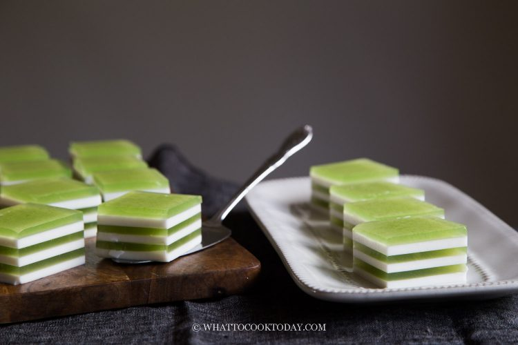

How to make Coconut Pandan Jelly

Recipe originally from 'What to Cook Today'
Ingredients
-
Pandan Layer:
- 5 pandan leaves
- 650ml water
- 6g agar-agar powder
- 85g sugar
- Coconut milk layer:
- 750ml coconut milk
- 6g agar-agar powder
- 80g sugar
- Mould: 7 x 5 x 2 inches
Instructions
-
- Prepare Pandan Layer
- Cut the pandan leaves into small pieces. Put in a blender and pour half of the water in and blend until you get a green color pandan juice. Strain the liquid and use the back of the spoon or your hand to squeeze any extra liquid out as much as you can. Mix this with the other half of the water to make sure it measures 650 ml. Top up with more water if needed
- Mix the pandan juice with the rest of the pandan juice layer. Stir to dissolve the agar agar. Bring to a boil and then lower the heat to let it simmer and cook for another 2-3 minutes. Make sure you no longer see specks of agar agar powder. Scoop up and check to see. If the agar agar doesn't completely dissolve, your cake won't gel properly later. Keep it warm here on the lowest heat setting on the smallest burner on your stove. Give it a stir every now and then
- Prepare Coconut Milk layer
- Put all ingredients for coconut milk layer in a saucepan. Stir to dissolve the agar agar powder. Bring to a gentle boil and then lower the heat to let it simmer. Keep stirring until you no longer see specks of agar agar powder, about 2-3 minutes. Lower the heat to the lowest possible and keep it warm here
- Layering the cake
- Gently pour about 1/3 cup of the coconut milk mixture into the dish or mould you want to use. Pop any bubbles you see with a toothpick and let this layer set at room temperature. Don't let it set solid completely or the next layer will not cling to it and will separate when you cut the cake later. As long as it's firm enough to hold the next layer and you see a thin film formed that doesn't stick to your finger when you touch, even though if it's still slightly wobbly when you gently shake it, you can proceed to pour the next layer
- The coconut milk layer should be firm by now. Pour 1/3 cup of the warm pandan layer starting from the one side and let it cover the coconut milk layer. Pop any large bubbles with toothpick. Let it sets at room temperature or you can transfer to a fridge to let it set again until it just firm enough, remember not solid cold or the next layer will not stick to the bottom layer
- Repeat this process until you run out of both coconut and pandan mixture. Give each mixture a stir before pouring
- Once you are done with layering. Let the cake chill further for a minimum of 2 hours for best result or 4 hours if you have the time